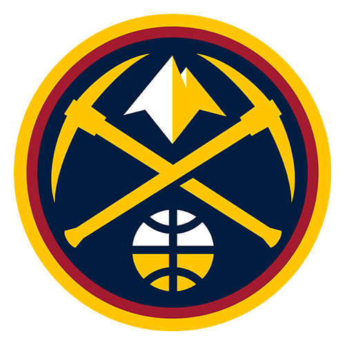

Your team’s whole world,
in one thread.
Scores, news, highlights and answers, delivered the second they matter, right where you already chat.
Live
Every play, the second it happens.
Live scores, statlines and win probability from the opening tip to the final buzzer, across every league you follow.

Nuggets84Ask
Ask it anything.
Lineups, matchup history, the deep-cut stats. Ask like you would a friend who never forgets a box score.
how has Ant played in Denver the last 3 years?
In Denver he averages 26.4 PPG on 47%, and the Wolves are 4-2 there. His last trip: 34 and 9.
Highlights
The highlight, on demand.
Text “show me” and the dunk, the walk-off or the wonder goal lands in your chat, seconds after it happens.
Recap
The whole game, in five lines.
Sixty seconds after the final whistle, the story of the night: who won it, who carried it, what it means.
- Edwards closed it out: 34 PTS, 8 REB, 6 AST.
- A 14-2 run in the third broke it open.
- Wolves move to 3rd in the West.
Your rules
Watch a player, not a feed.
“Text me when Ant checks in.” “Ping me on every lead change.” Set it once, and your agent handles the rest.
Everywhere
Right where you already text.
iMessage, WhatsApp, Discord and Telegram, group chats included. No new app, no feed to learn.


Be first in line.
Early access is opening in a private beta. Drop your number and we'll text you the moment it's live.